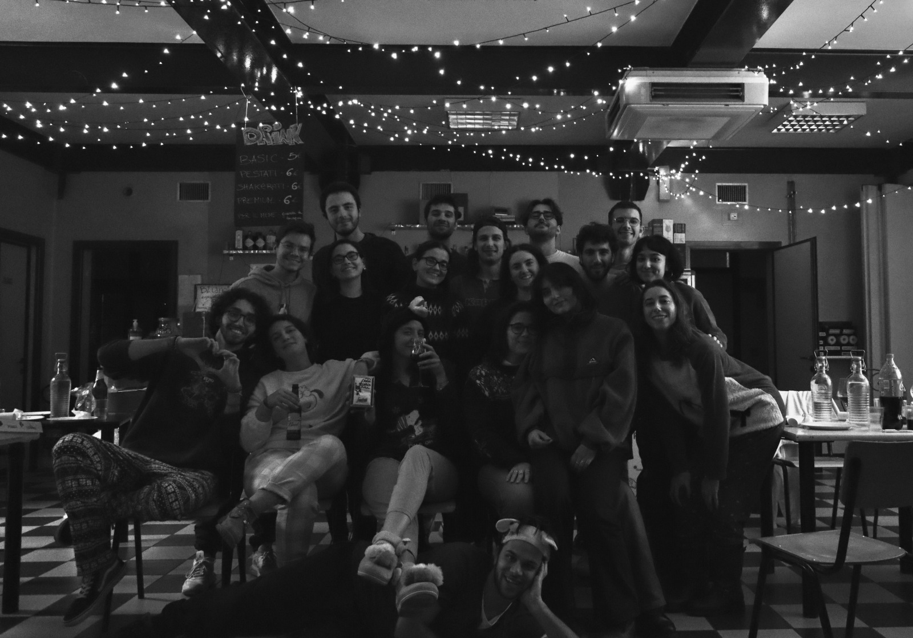
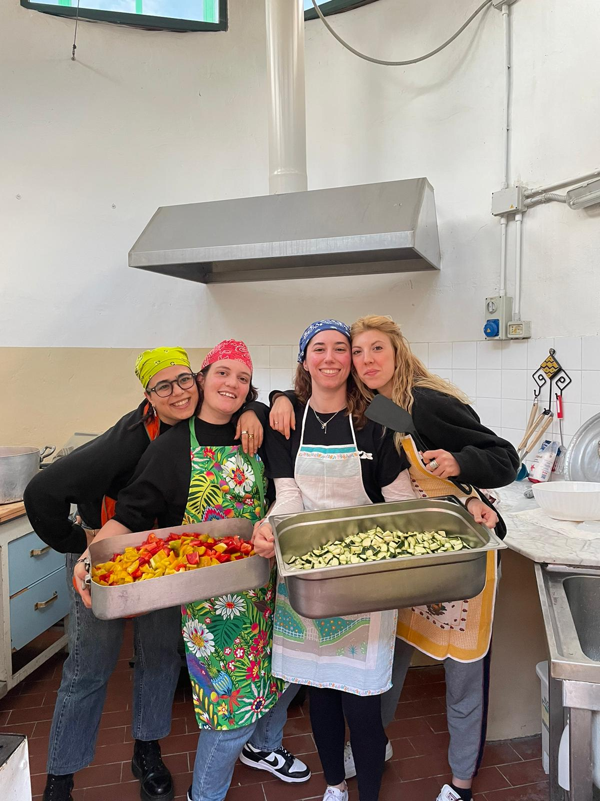

Servizio 2
Descrizione...



Nel 2018 un gruppo di amici crea Ueiss: un progetto con l’obiettivo di creare spazi di socialità per i giovani di Bentivoglio. Dal 2022 gestiamo il Circolo Arci di San Marino, divenuto punto di riferimento per la comunità con momenti culturali, proiezioni e concerti. Grazie a questi eventi promuoviamo partecipazione, collaborazione e protagonismo giovanile, convinti che queste attività possano creare veri e propri legami all’interno della comunità locale.
Descrizione...
Descrizione...
Descrizione...
Informazioni sugli eventi.
I nostri progetti.